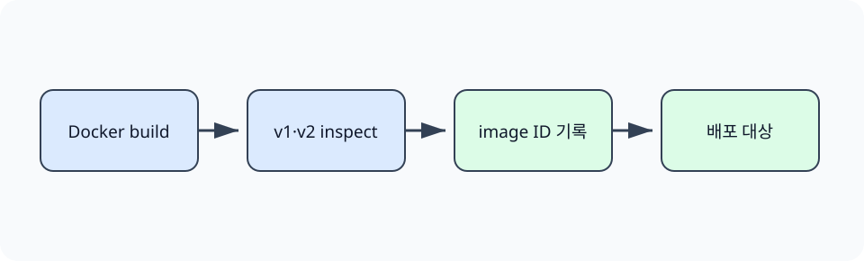

한경 KDT · LLM Agent 개발 & 바이브코딩 · Part 7 · 프로덕션 엔지니어링 · Ch 33 · CI/CD와 배포 운영
latest 같은 태그는 새 이미지를 가리키도록 이동할 수 있습니다. 태그만 배포 기록에 남기면 장애가 난 시점에 어떤 바이트를 실행했는지 확인하기 어렵습니다. 이 절에서는 같은 Dockerfile에서 v1과 v2 이미지를 실제로 빌드하고, 서로 다른 이미지 ID를 배포 기록에 고정합니다.
로컬 Docker 데몬은 이미지 빌드와 검사를 담당합니다. 레지스트리 push와 클라우드 반영에는 별도 자격 증명과 대상 환경이 필요하므로 실행하지 않으며, 어느 경계까지 확인했는지 출력과 확인 필요 항목으로 구분합니다.
Ch32에서 Dockerfile로 이미지를 만들었고 앞 절에서 검사를 통과한 변경만 다음 단계로 보냈습니다. 이 절은 그 결과물을 어떤 식별자로 기록해야 이전 배포를 다시 선택할 수 있는지 다룹니다.
매장의 ‘신상품’ 표시는 다른 상품으로 옮겨 갈 수 있지만 창고 물품 번호는 특정 재고를 가리킵니다. Docker 태그는 이동 가능한 이름이고, 이 실습에서 확인하는 로컬 이미지 ID는 현재 Docker 데몬의 특정 이미지 구성을 식별합니다.
이미지 레지스트리(image registry)는 컨테이너 이미지를 저장하고 배포 환경에 전달하는 서비스입니다. 태그(tag)는 v1이나 latest처럼 사람이 읽기 좋은 이름이며 새 이미지로 이동할 수 있습니다. 로컬 이미지 ID는 현재 Docker 데몬이 빌드한 이미지 구성을 식별합니다. 레지스트리 manifest digest는 push된 매니페스트의 내용을 식별하며, 다중 플랫폼 이미지에서는 목록과 플랫폼별 매니페스트의 적용 단위도 구분해야 합니다. 이 실습은 로컬 이미지 ID와 JSON 이력까지만 확인하고 레지스트리 digest는 생성하지 않습니다.
앞 절에서 만든 wheel과 평가 보고서는 CI가 만든 결과물입니다. 이 절은 그 결과를 실행 환경과 묶은 OCI 이미지를 다룹니다. Docker의 이미지 ID는 로컬 이미지 구성을 식별하며, 레지스트리에 push한 뒤 받는 manifest digest와 적용 범위를 구분해야 합니다.
이미지 태그는 이동 가능한 이름입니다. 노트북의 docker image inspect ... {{.Id}}는 레지스트리 digest가 아니라 로컬 이미지 ID를 반환합니다. 실습은 v1과 v2 이미지의 로컬 ID가 다른지 확인하고, 교육용 JSON의 digest 필드에 v1의 로컬 ID를 저장합니다. 필드 이름만 보고 레지스트리 매니페스트를 검증했다고 해석하지 않습니다.
특정 이미지 식별자를 기록해도 그 이미지가 안전하거나 올바르다는 보장은 아닙니다. 서명·취약점 검사·테스트 결과를 같은 산출물과 연결해야 합니다. 레지스트리 manifest digest는 실제 push 뒤 별도로 기록하며, 이번 로컬 실험에서는 관찰하지 않았습니다. 클라우드 배포 권한과 환경 승인은 이미지 생성 권한과 분리합니다.

레지스트리에 push하면 manifest digest가 별도로 생기며 다중 플랫폼 목록에서는 적용 단위가 다시 달라질 수 있습니다. 이번 JSON의 `digest` 필드명은 교육용이지만 실제로 담긴 값은 로컬 이미지 ID입니다.
같은 Dockerfile에 서로 다른 리비전 빌드 인자를 주어 v1과 v2 OCI 이미지를 실제로 빌드합니다. Docker가 계산한 이미지 ID가 달라지는지 확인하고 v1 식별자를 배포 기록에 저장합니다. 로컬 Docker 데몬까지 실행하며 레지스트리 전송과 클라우드 권한 사용은 수행하지 않습니다.
준비된 Python 3.12 노트북에서 첫 셀부터 Shift+Enter로 하나씩 실행합니다. 안내한 결과를 먼저 확인하고 지정한 값 하나를 바꿔 비교합니다. 문서를 사용하는 실습은 파일 묶음이 필요합니다. 노트북과 실습 파일 함께 받기 · 처음 실습하는 방법. 전체 코드 복사에는 실험 셀 전체가 포함됩니다. 이 HTML에서는 코드를 실행하지 않습니다.
태그와 다이제스트가 가리키는 배포 대상을 비교합니다.
첫 셀의 Path 탐색은 어느 상위 폴더에서 열어도 Ch33의 pyproject.toml을 기준으로 실습 폴더를 찾습니다. 뒤의 subprocess.run(..., cwd=lab, capture_output=True)은 명령을 별도 프로세스로 실행하고 화면 문구와 종료 코드를 함께 반환합니다. 이 보조 코드는 CI를 흉내 내는 공통 실행 경계이며, 각 절의 판정은 다음 셀에서 해당 명령의 실제 반환값을 읽어 결정합니다.
from pathlib import Path
import hashlib, subprocess, sys, tempfile, json
lab = next((p for p in [Path.cwd(), *Path.cwd().parents] if p.name == "ch33-cicd" and (p / "pyproject.toml").is_file()), Path("labs/part7/ch33-cicd")).resolve()이미지 태그는 이동 가능한 이름입니다. 노트북의 docker image inspect ... {{.Id}}는 레지스트리 manifest digest가 아니라 현재 Docker 데몬의 로컬 이미지 ID를 반환합니다. 실습은 v1과 v2 이미지의 로컬 ID가 다른지 확인하고, 교육용 JSON의 digest 필드에 v1의 로컬 ID를 저장합니다. 필드 이름만 보고 레지스트리 매니페스트를 검증했다고 해석하지 않습니다.
for revision in ("v1", "v2"):
built = subprocess.run(["docker", "build", "-q", "-t", f"ch33-demo:{revision}", "--build-arg", f"APP_REVISION={revision}", "."], cwd=lab, text=True, capture_output=True)
print(revision, built.stdout.strip()[:27], "exit_code=", built.returncode)
assert built.returncode == 0
digest_v1 = subprocess.check_output(["docker", "image", "inspect", "ch33-demo:v1", "--format", "{{.Id}}"], text=True).strip()
digest_v2 = subprocess.check_output(["docker", "image", "inspect", "ch33-demo:v2", "--format", "{{.Id}}"], text=True).strip()
print("same_tag=latest", "same_digest=", digest_v1 == digest_v2)
assert digest_v1 != digest_v2v1 sha256:1cb76db0ea58f43f50dc exit_code= 0
v2 sha256:4067958c02de6da69345 exit_code= 0 same_tag=latest same_digest= False
특정 이미지 식별자를 기록해도 그 이미지가 안전하거나 올바르다는 보장은 아닙니다. 서명·취약점 검사·테스트 결과를 같은 산출물과 연결해야 합니다. 레지스트리 manifest digest는 실제 push 뒤 별도로 기록하며, 이번 로컬 실험에서는 관찰하지 않았습니다. 클라우드 배포 권한과 환경 승인은 이미지 생성 권한과 분리합니다.
with tempfile.TemporaryDirectory() as temp:
t = Path(temp)
(t / "scripts").mkdir()
(t / "runs").mkdir()
(t / "scripts/deploy.py").write_text((lab / "scripts/deploy.py").read_text())
result = subprocess.run([sys.executable, "scripts/deploy.py", digest_v1], cwd=t, text=True, capture_output=True)
print(result.stdout.strip(), "exit_code=", result.returncode)
print((t / "runs/deployment.json").read_text().strip())
assert result.returncode == 0deployed revision=1 digest=sha256:1cb76db0ea58... exit_code= 0
[
{
"revision": 1,
"event": "deploy",
"digest": "sha256:1cb76db0ea58f43f50dc84141dfc2896efed098aa2e67e01fc9f5116cc417328",
"status": "ready"
}
]
같은 latest 태그라는 설명만으로 실제 바이트를 식별할 수 없지만, 내용에서 계산한 다이제스트는 v1과 v2가 달랐습니다. 로컬 배포 기록은 다이제스트를 저장했습니다.
확인할 점 — v1과 v2의 로컬 이미지 ID가 다른지, 교육용 배포 JSON이 v1의 로컬 ID를 저장했는지 확인합니다. 레지스트리 manifest digest는 출력되지 않습니다.
v1과 v2는 같은 태그 이름을 사용할 수 있지만 로컬 Docker가 반환한 이미지 ID는 서로 달랐습니다. 따라서 배포 기록에 태그만 남기면 당시의 정확한 내용을 나중에 식별하지 못할 수 있습니다. 이 실습은 로컬 이미지 ID를 저장해 롤백에서 이전 로컬 결과를 다시 선택합니다. 로컬 이미지 ID 확인은 레지스트리에 push한 manifest digest, 서명, 다중 플랫폼 이미지 목록까지 검증하지 않습니다. 클라우드에서는 승인된 digest를 Deployment 매니페스트의 image 값에 기록하고 OIDC 기반 최소 권한으로 적용합니다.
이번 출력의 sha256: 값은 로컬 이미지 ID입니다. 레지스트리 manifest digest, 이미지 서명, 다중 플랫폼 목록은 확인하지 않았습니다. 실제 클라우드 배포 전에는 push 결과의 digest와 배포 매니페스트의 image 값이 같은지 별도로 검사합니다.
다음 학습과 이어지는 지점 — 다음 절은 새 이미지가 요청을 정상 처리하는지 오류율과 p95 지연으로 관찰합니다.
태그는 사람이 정한 이동 가능한 이름이고, 다이제스트는 이미지 내용에 대응하는 식별자입니다.
그렇지 않습니다. 제작자 신뢰에는 이미지 서명과 공급망 정책이 추가로 필요합니다.
레지스트리와 클라우드 권한, 배포 대상, readiness 검사, 네트워크 설정 등이 필요합니다.
정확히 어떤 내용을 배포했는지 추적하고 이전 내용을 다시 선택하기 위해서입니다.